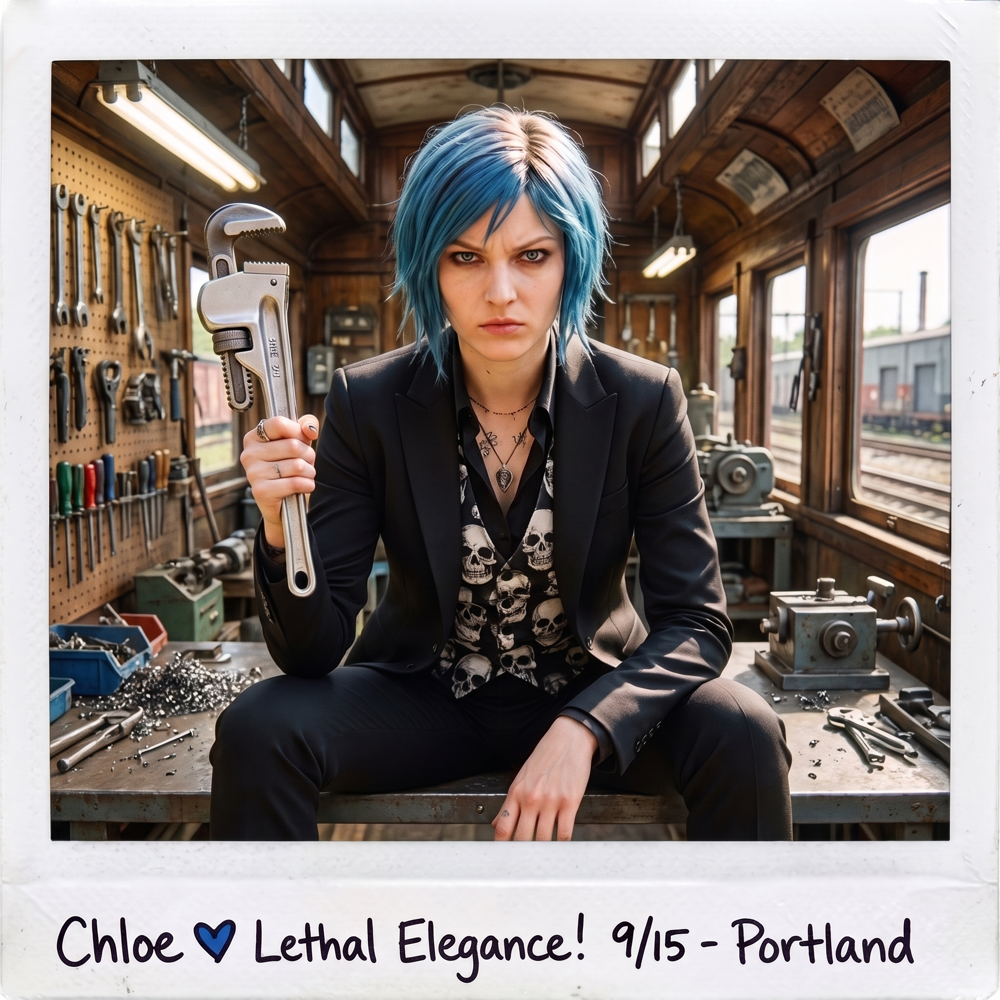
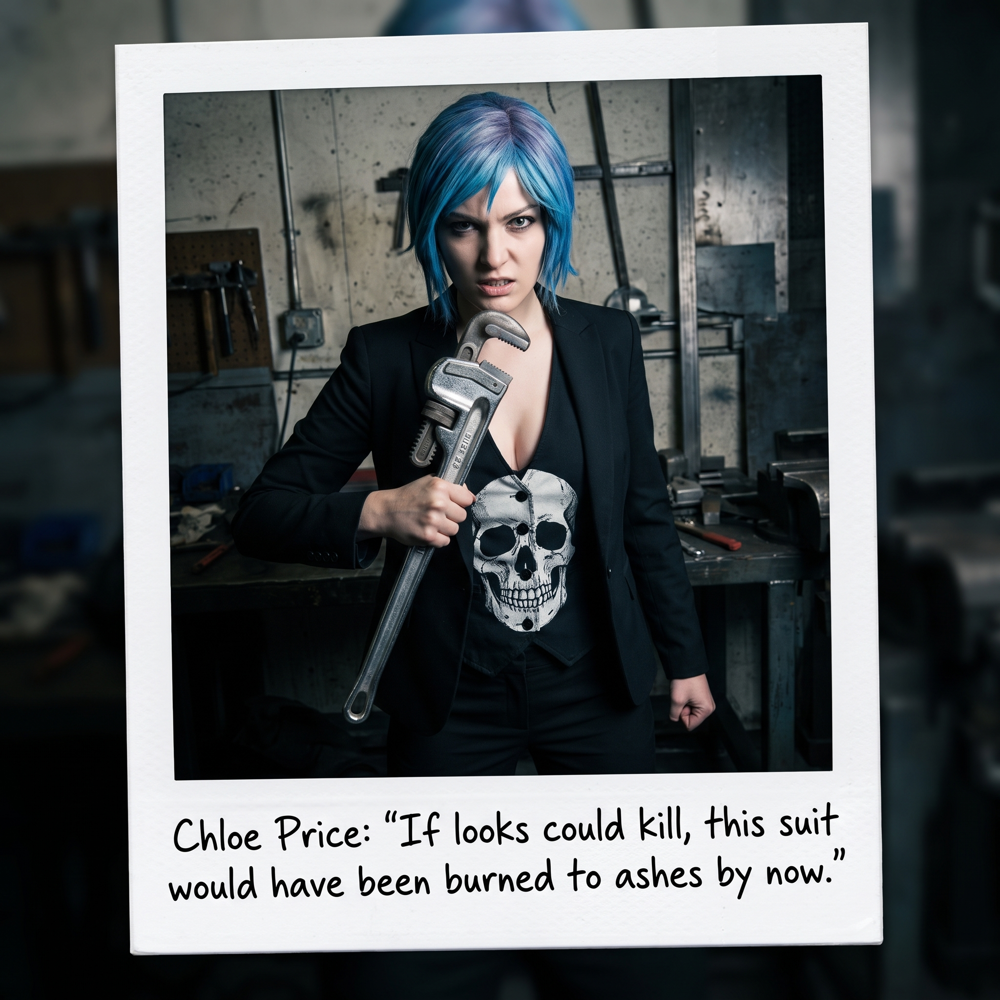
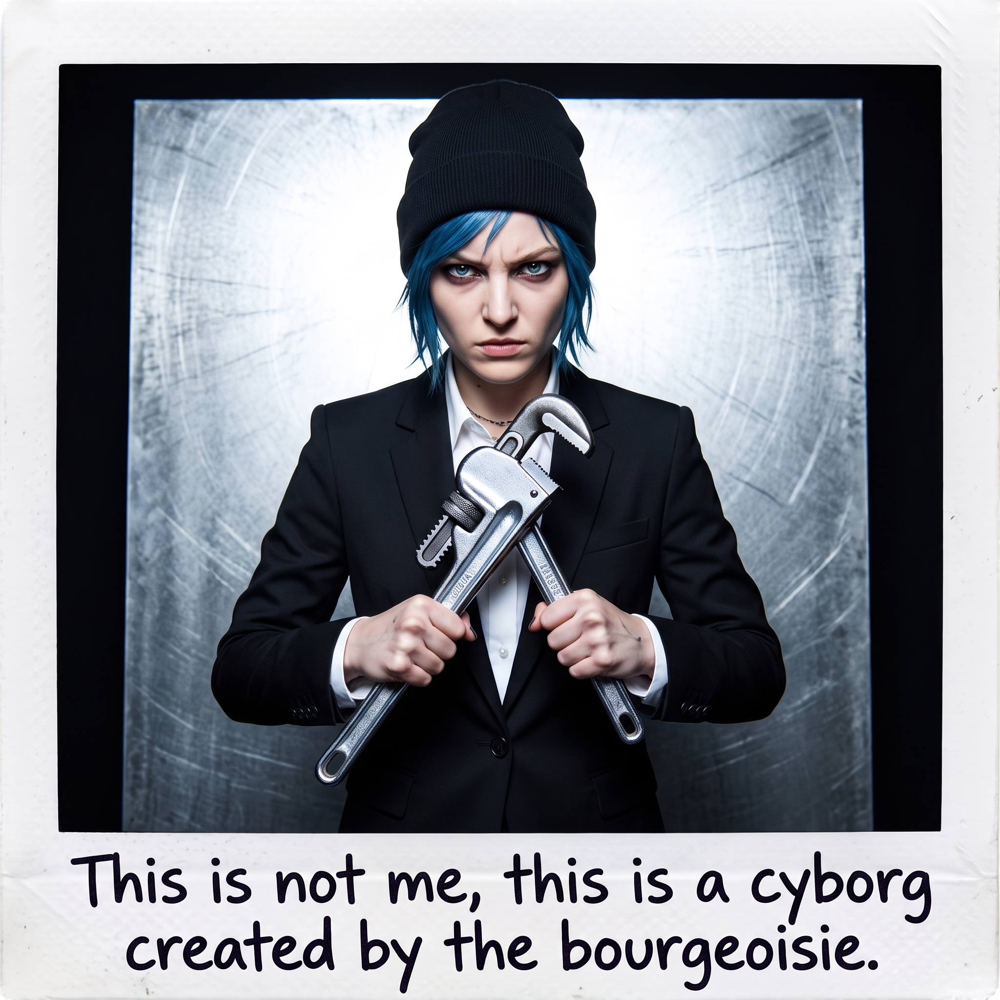
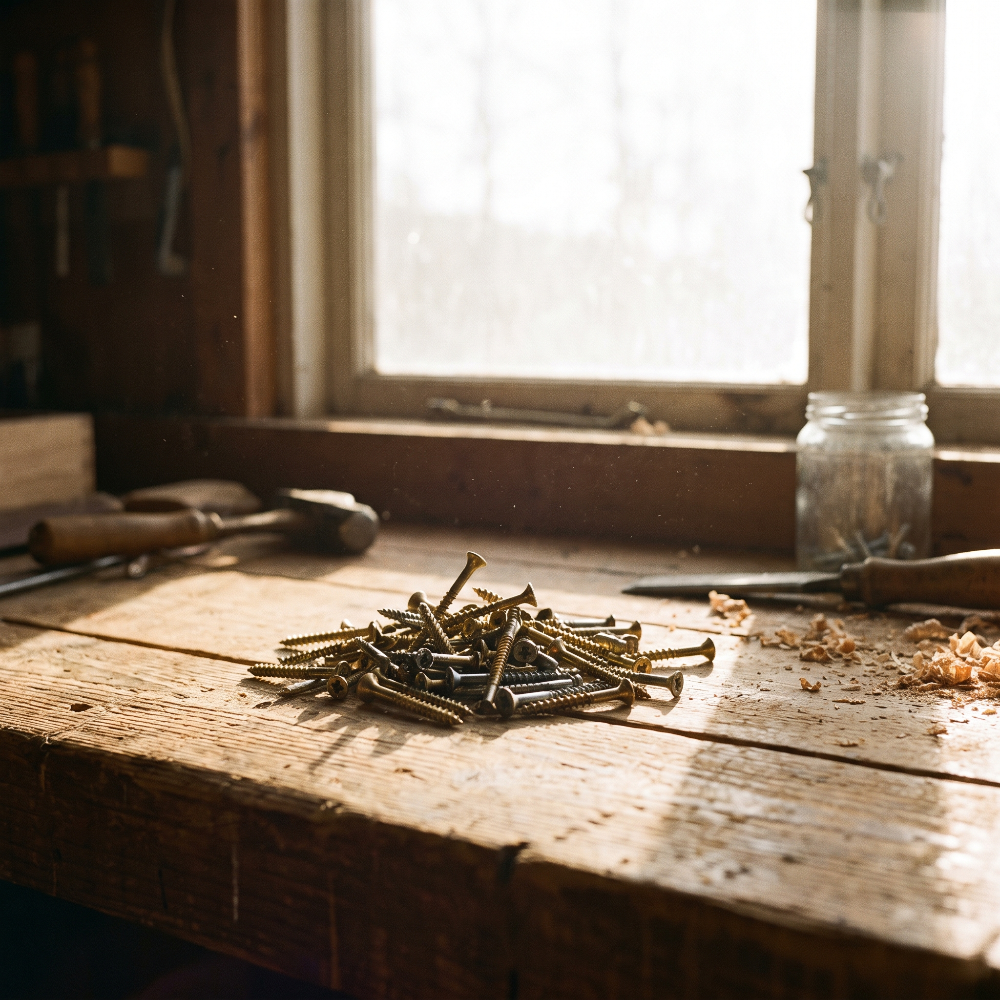
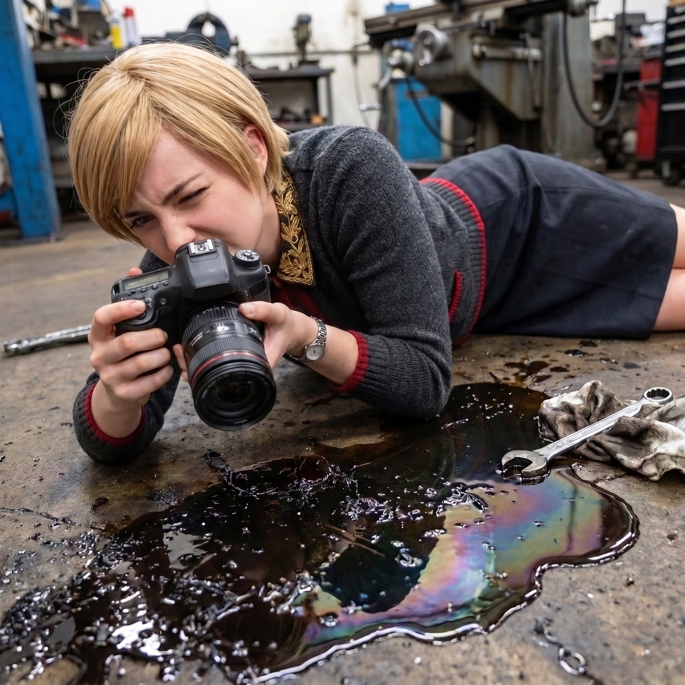
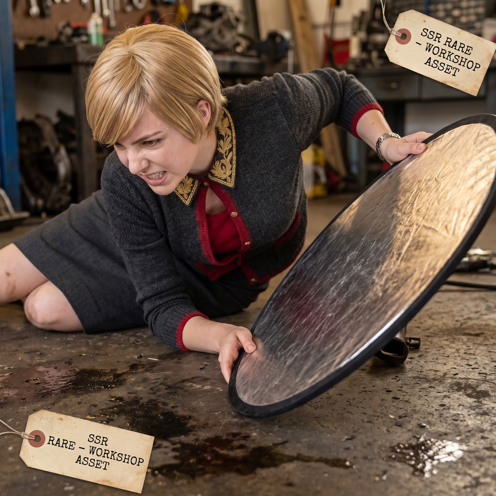
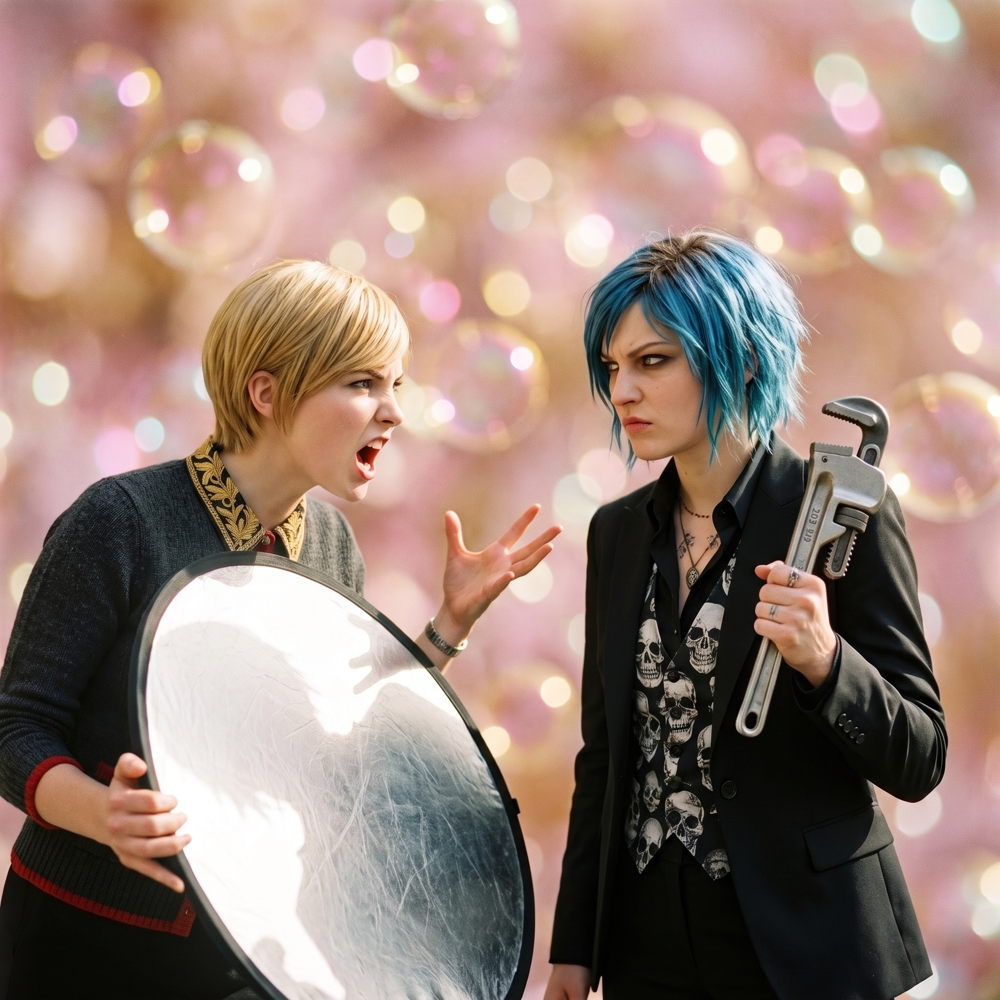
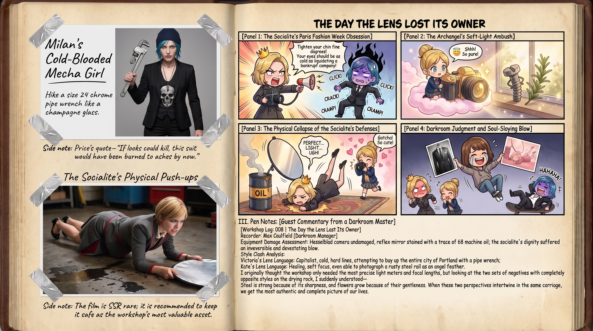

雙重曝光的一天








週四清晨，Max 因俄勒岡攝影協會的黑白暗房交流會需要進城一整天。臨走前，她將三台主力相機留在一號車廂長桌上，附帶一張手繪的簡易測光指南。
然而，當這項記錄工坊日常宣傳照的任務落到 Victoria 和 Kate 手上時，整個工坊的畫風在十分鐘內發生了嚴重的維度撕裂。
一、理念衝突：米蘭時裝週 vs. 治癒系繪本
Victoria 捧著中畫幅相機，金絲眼鏡後目光如炬，將整個二號車廂當成了時尚雜誌的封面拍攝棚。她指揮 Chloe 擺出各種極其做作的模特姿勢：「Price，下巴收緊五度！眼神不要像要拆了我，要帶著資本主義重工業審判者的冷酷疏離！把那把活動扳手像香檳杯一樣優雅地托在指尖！」
Kate 拿著那台老式旁軸相機，完全不按黃金分割率構圖。她的鏡頭全在捕捉一些極致微小而治癒的細節——停在金屬車床上的瓢蟲、窗櫺邊隨風搖曳的迷迭香碎花，以及陽光在冷軋鋼工具牆上折射出的一抹微弱彩虹光暈。
二、拍攝現場的荒謬修羅場
Chloe 被 Victoria 強行逼著套上一件剪裁修身的高級黑色西裝外套，裡頭卻依然穿著那件破洞骷髏背心。
「Chase！老娘的手指在車床上抽筋了！」Chloe 咬著牙維持著單手插兜、另一手懸空握著角磨機的僵硬姿勢，整個人像一尊隨時會爆炸的深藍色雕像，「到底拍好了沒有？！這套姿勢讓老娘看起來像個在鐵軌邊賣保險的二手推銷員！」
「保持專注！光影剛好落在妳的下頜線上！不要動！三、二、一——」
「咔嚓。」
就在 Victoria 喊倒計時的瞬間，Kate 笑瞇瞇地從旁邊探出小腦袋，手裡的相機「啪嗒」一聲，拍下了 Victoria 為了取景整個人趴在機油地板邊緣、裙擺差點蹭到切削油的滑稽特寫。
「Kate！妳拍了什麼？！」Victoria 猛地抬頭，名媛雷達瞬間警報大作。
「哎呀，Victoria 剛才認真對焦的眼神非常聖潔呢～」Kate 像隻得逞的小貓般輕巧退後兩步，溫柔地護著相機，「洗出來一定是一張非常生動的幕後紀錄哦。」
三、傍晚審片：Max 歸來後的靈魂暴擊
下午五點半，Max 背著雙肩包推門回到車廂。
當她從乾燥架上取下兩人剛沖洗出來的底片和拍立得時，整個人扶著暗房的門框笑得差點喘不上氣。
風格 A【高冷名媛工業風】：Chloe 身穿西裝、眼神兇狠、手握鍍鉻管鉗，背後的冷軋鋼板被反光板打出了宛如秀場的極致冷光（Chloe 在底下用馬克筆標註：「這不是老娘，這是資產階級捏造的仿生人」）。
風格 B【大天使童話繪本風】：滿屏都是冒著熱氣的洋甘菊茶杯、被光暈包裹的螺絲釘，以及一張 Victoria 抓著反光板對 Chloe 大喊大叫、但背景被柔焦成粉金色小泡泡的生動抓拍。
「Caulfield，妳必須承認，」Victoria 端著伯爵紅茶，坐在高腳凳上冷靜地為自己辯護，「只有我拍的那組光影反差，才配得上基金會下季度的宣傳手冊。」
「可是 Kate 拍的照片……」Max 擦掉笑出來的眼淚，拿起那張 Victoria 趴在地上對焦的拍立得，眼底滿是溫柔的光芒，「有一種讓人想立刻放下扳手、坐下來喝一杯熱茶的魔力呢。」
點唱機在角落自動播放起悠揚的慢調。
夕陽將兩套截然不同風格的照片染上一層均勻的金紅，在沒有專業攝影師坐鎮的這一天，名媛的嚴苛與大天使的溫柔，在底片上碰撞出了一份獨屬於波特蘭東區的混亂與溫暖。